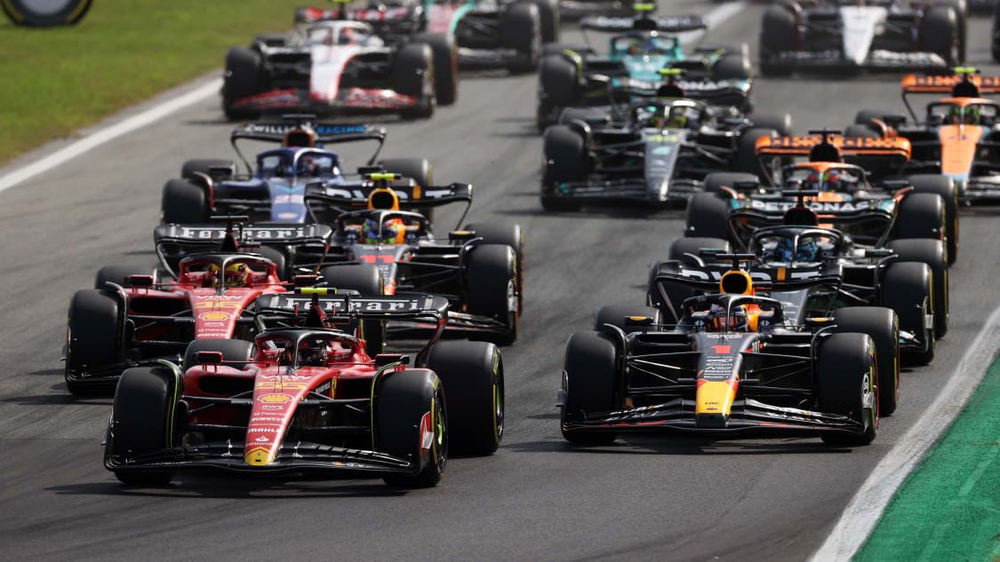
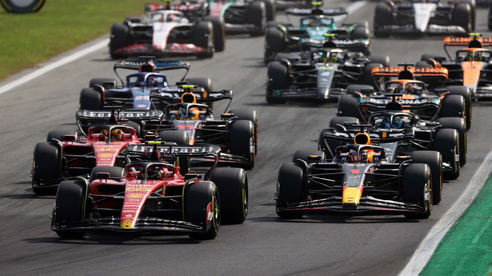

F1 - El sitio de las carreras de Fórmula 1
Introducción a la Formula 1
La Fórmula 1 es la cúspide del automovilismo y la categoría más alta de las carreras de monoplazas. Cuenta con los mejores pilotos y equipos de alto rendimiento...
Equipos de Formula 1
- McLaren
- Ferrari
- Red Bull Racing
- Mercedes
- Aston Martin
- Alpino
- Haas
- RB
- Williams
- Patada Sauber
Conductores
- Max Verstappen
- Lando Norris
- Charles Leclerc
- Oscar Piastri
- Calos Sainz
- George Russell
- Lewis Hamilton
- Sergio Perez
- Fernando Alonso
- Nico Hulkenberg
- Yuki Tsunoda
- Pierre Gasly
- Lance Stroll
- Esteban Ocon
- Kevin Magnussen
- Alexader Albon
- Daniel Ricciardo
- Oliver Bearman
- Franco Colapinto
- Liam Lawson
- Zhou Guanyu
- Logan Sargeant
- Valtteri Botas
Calendario de Carreras 2024
Cronograma de la temporada 2024.
- Bahrein | Sakhir: 2 de marzo - COMPLETADA Ganador: Max Verstappen
- Arabia Saudita | Yeda: 9 de marzo - COMPLETADA Ganador: Max Verstappen
- Australia | Albert Park: 24 de marzo - COMPLETADA Ganador Carlos Sainz
- Japón | Suzuka: 7 de abril - COMPLETADA Ganador: Max Verstappen
- China | Shanghai: 21 de abril - COMPLETADA Ganador: Max Verstappen
- Miami | Miami: 5 de mayo - COMPLETADA Ganador: Lando Norris
- Emilia Romagna | Imola: 19 de mayo - COMPLETADA Ganador: Max Verstappen
- Mónaco | Montecalo - Mónaco: 26 de mayo - COMPLETADA Ganador: Charles Leclerc
- Canadá | Montreal - Gilles Villeneuve: 9 de junio - COMPLETADA Ganador: Max Verstappen
- España | Barcelona - Catalunya: 23 de junio - COMPLETADA Ganador: Max Verstappen
- Austria | Red Bull Ring: 30 de junio - COMPLETADA Ganador: George Russell
- Gran Bretaña | Silverstone: 7 de julio - COMPLETADA Ganador: Lewis Hamilton
- Hungría | Budapest - Hungaroring: 21 julio - COMPLETADA Ganador: Oscar Piastri
- Bélgica | Spa-Francorchamps: 28 julio - COMPLETADA Ganador: Lewis Hamilton
- Países Bajos | Zandvoort - 25 de agosto - COMPLETADA Ganador: Lando Norris
- Italia | Monza: 1 septiembre - COMPLETADA Ganador: Charles Leclerc
- Azerbaiyán | Bakú: 15 septiembre - COMPLETADA Ganador: Oscar Piastri
- Singapur | Singapur: 22 de septiembre - COMPLETADA Ganador: Lando Norris
- Estados Unidos | Austin - Circuito de las Américas: 20 de octubre - COMPLETADA Ganador: Charles Leclerc
- México | Ciudad de México - Autódromo Hermanos Rodríguez - COMPLETADA Ganador: Carlos Sainz
- Brasil | Interlagos: 3 de noviembre - Autódromo José Pace- COMPLETADA Ganador: Max Verstappen
- Las Vegas | Las Vegas: 24 de noviembre
- Qatar | Losail: 1 diciembre
- Abu Dhabi | Abu Dhabi: 8 diciembre
 
